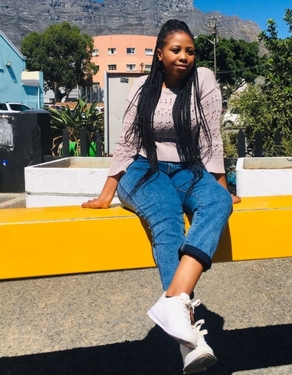
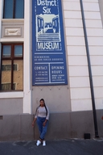
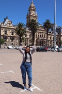

Which City
Durban
I choose Durban-eThekwini as a city I would love to visit because of its warmest coastline and the structure which is the building and the beach view.Durban is the ultimate holiday destination because the weather is always good. The sunny weather, warm Indian Ocean, and warm Mozambique Current it keeps Durban warmer than the rest of the country. Dubbed South Africa's playground, the day always promises to be warm whatever the season.Durban is the ultimate history destination because the weather is always good.The sunny weather,warm Indian Ocean and warm Mozambique Current keeps Durban warmer than the rest of the country.Dubbed South Africa's playground,the day always promises to be warm whatever the season.
A foreign language
I would like to learn portuguese because I have a friend who is a portuguese speaker
| English phrase | Foreign phrase |
|---|---|
| Good Morning | Bom dia |
| Good Aftertoon | Boa tarde |
| Thank you God | Obrigada deus |
Historical Places
Castle of Good Hope
The first stone was laid in 1666 and it was completed in April 1679. The castle was build by soldiers,slaves and Khoi undergoing punishment. The material used to build the castle was rock from the granite outcrop on Signal Hill.


District Six Museum
The museum was established to commemorate and remember the District Six community that was scattered when the apaertheid government declared the area "whites only" area It houses an impressive collection of historical materials The District Six foundation was established in 1989 , and in 1994 it came into being
City Hall
Nelson Mandela made his first free speech from a balcony at the Cape Town City Hall in 1990. In 2017 was proposed that a full size statue of Nelson Mandela to be installed on the balcony where he famously addressed his people. It is built from honey-coloured ootolic limestone imported from Bath in England.
